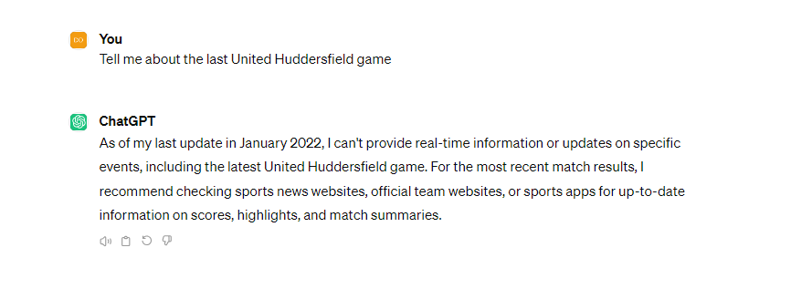
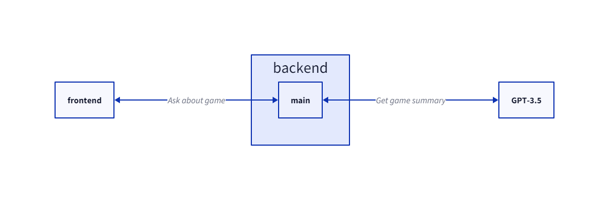
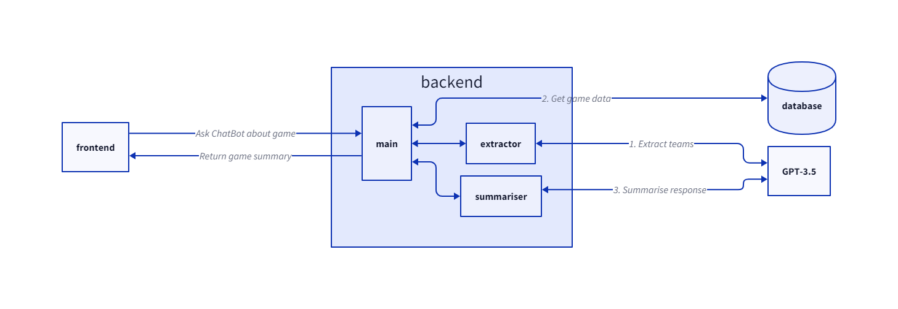
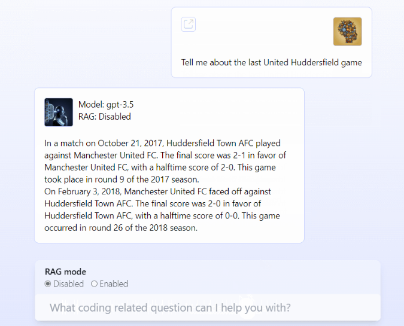

8th April 2024
OpenAI released an early demo of ChatGPT on the 30th of November 2022. Since then, it has propelled the general public’s awareness of the power of Large Language Models (LLM). In other words, ChatGPT was the first viral AI-powered ChatBot. These Generative Pre-Trained Transformers take a prompt (a block of written text with no other context) and will attempt at producing a coherent written response. GPT models are trained on conversation data to learn the most appropriate response to whatever new prompt they are served, but it should be noted that the training data they have been built from is all they know. They are often compared to parrots due to this behavioural trait, echoing previously seen conversations to construct sensible responses.
By itself a tool that can do this is very powerful. It's currently commonplace on social media to see posts around using models like GPT-3.5 (the current ChatGPT model used "under the hood") to generate templates for emails, social media posts, poems, birthday party ideas and all sorts of other supposedly creative ideas. However, the current limitation of most of these models is integration into other systems and knowledge bases. A pure LLM won't know the result of the football game last week or what Elon Musk last posted. Achieving this is something the large tech companies are actively working on, but it can also be achieved by ourselves with very little code!
In this article I will be using my personal project PunditBot as an example of how this can work, but the concept can be applied to anything. To keep things as simple as possible, let’s talk about achieving the goal we mentioned before - finding out the result of the football game last week.
Currently if we ask ChatGPT about this it admits it doesn't have access to current data around football games - as we've established the model doesn't actively search the web for data to integrate into its response.
We need to build new logic around the call to OpenAI's GPT model. Fortunately, OpenAI also offers requests straight to their model through an API, billed to your account (billing is done by the number of tokens used in each prompt and generated in each response, where a token can be thought of as a word or part of a word). Now we can write code (here is a short python script as an example stolen directly from OpenAI's Quickstart tutorial to call the API with our prompt.
ChatCompletions
from openai import OpenAI
client = OpenAI()
completion = client.chat.completions.create(
model="gpt-3.5-turbo",
messages=[
{"role": "system", "content": "You are PunditBot, aimed at reporting on football
games"},
{"role": "user", "content": "Who won the man city arsenal game last weekend?"}
]
)
print(completion.choices[0].message)
When using the `/v1/chat/completions` endpoint you can specify both a system prompt (response context for the LLM) and a user prompt (the actual prompt given, often called utterance).
As with all programming endeavours, let's aim not to re-invent the wheel and use an example project to use as a template for our own. In PunditBot I used the docker genai-stack project. Note that there are many other repositories that can be great for starting a project like this from, this is just the one I chose.
This repository contains other interesting tools that utilise an LLM model, but most importantly it has a Vite front end application connected to a FastAPI backend, with configuration we can plug our new OpenAI API key into.
So now we have our own version of ChatGPT - a chat bot interface that uses an LLM for generated answers. A simplified diagram of the app architecture would look like this.
Our app is still unable to report on the game last week. However, our app now has a backend layer we can tailor to whatever needs we wish. One way to implement this logic could be the following
To complete these steps, we are going to build an extractor function to identify the teams mentioned, a lookup function to find the data for the teams' last game and a summariser function to bundle up the data into a nicely written response. Exploring step 2 isn't of relevance to this article as it does not involve an LLM. We could use a local database and query it in SQL, or a tool that searches the web or requests data from football API for the game results. Either way this functionality is not novel or new; let's instead explore steps 1 and 3.
The method to extract the specific football teams from a user’s utterance could be overly complex, one way to achieve this could be to search through a list of pre-defined keywords. However, this is a task LLMs are surprisingly good at. See the following prompt.
You are an expert extraction algorithm tasked at extracting what football match (or matches) the user wants
to
know about. You must return the 2 football clubs that the user has asked about from the question. Return the
2
clubs in a comma separated list.
Football clubs must be referred to using one of the following names
- Arsenal FC
- Brighton & Hove Albion FC
- Chelsea FC
- Crystal Palace FC
- Everton FC
- Southampton FC
- Watford FC
- West Bromwich Albion FC
- Manchester United FC
- Newcastle United FC
- AFC Bournemouth
- Burnley FC
- Leicester City FC
- Liverpool FC
- Stoke City FC
- Swansea City AFC
- Huddersfield Town AFC
- Tottenham Hotspur FC
- Manchester City FC
- West Ham United FC
For example, for the question
"What happened the last time arsenal played spurs?"
You should return
"Arsenal FC, Tottenham Hotspur FC"
If you do not know the value of an attribute asked to extract, return null for the attribute's value.
The question: {question}
This prompt is engineered to ask the LLM for a specific outcome - find from the question provided two football teams. The specific football clubs that should be returned are listed (this data is from Premier League teams during the 2017/18 season in case you are wondering why Huddersfield Town are there). There is also an example of One-Shot Learning - where an example model answer has been provided. Finally, it is mentioned that if the answer cannot be found the LLM should return null and not hallucinate a response (an LLM returning misinformation confidently as fact is often described as the LLM hallucinating).
This works surprisingly well! Beyond clear questions specifying the names of the teams, GPT-3.5 was able to identify the two teams involved in the Manchester Derby and could even understand "the blues" as Chelsea FC.
After step 1 and step 2 we need to return to the user the game data found in a Chat Bot style response. This again is remarkably simple using an LLM, see the example prompt below.
You have been asked to find the results of matches between the following Premier League football teams
here is data about the games in a python dictionary format
{matchData}
Summarise a response to the question using the data listed above.
Only use data listed above.
Do not infer any data outside of what is listed above.
Like the extractor prompt, the content within the curly brackets will contain the actual match data. In my example I injected the string representation of a python dictionary containing key value pairs of game data (half-time score, home team, date of the match, etc.). We heavily emphasise in the end of the prompt to only use mentioned data to deter the model from hallucinating.
Now we have all 3 steps, connecting them all together gives us the following architecture.
With the LLM's new ability to extract the teams mentioned in the user’s utterance, find the data related to those teams and bundle it up in a well written response we can now successfully ask about a specific football game. Note in the screenshot below the data has come from a game in the 2017/18 season - for step 2. I have used a dataset of games from that period in a Neo4j graph database.
Now there are obvious flaws with the current version I am showcasing above.
Ultimately, this article is concerned with the application of utilising an LLM with external tool. What has been proven here is it is possible to take an LLM model like GPT-3.5 and add new functionality around it to make it more useful for specific applications. There are frameworks (such as LangChain) that are entirely based on this idea. The idea could be taken a lot further by plugging in more tools - for example we could return a video highlight of the winning goal to both games and render that beneath the game reports.
With some surrounding logic it's possible to achieve a lot more functionality with existing LLMs. I hope you found this interesting and potentially inspiring into what's possible in this area of the AI space.
Navigate home